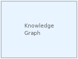
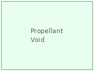
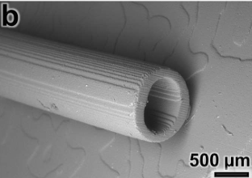
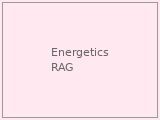
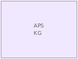

|
Kevin David Hayes I'm a PhD student in Mechanical Engineering at the University of Maryland, where I work on machine learning and AI for scientific discovery. My research focuses on Large Language Models, Diffusion Models, and their applications to scientific reasoning and materials discovery. I'm particularly interested in retrieval-augmented generation (RAG), interpretable AI, and training foundation models at scale. In Summer 2025, I was a research intern at Lawrence Livermore National Laboratory working on Large Language Diffusion models. Previously, I interned at the Department of Defense where I received the Director's Award from the Chief Engineer of Advanced Systems and Technology. |
{kind=link}
ResearchI'm interested in large language models, diffusion models, retrieval-augmented generation, and AI for scientific discovery. My work spans training foundation models at scale, developing interpretable AI systems, and applying NLP to materials science and energetics research. Representative papers are highlighted. |

|
FineGRAIN: Evaluating Failure Modes of Text-to-Image Models with Vision-Language Model Judges
Kevin David Hayes, Micah Goldblum, Vikash Sehwag, Gowthami Somepalli, Ashwinee Panda, Tom Goldstein NeurIPS, 2025 SPOTLIGHT project page / arXiv / code A comprehensive benchmark for evaluating failure modes in text-to-image generation models using vision-language models as automated judges. |
|

|
An Automated Approach for Domain-Specific Knowledge Graph Generation – Interpretable Hierarchical Learning of Chemical Reactions
Connor O'Ryan, Kevin Hayes, Francis Vangessel, Ruth Doherty, William Wilson, John Fischer, Zois Boukouvalas, Peter Chung Journal of Chemical Information and Modeling, 2024 paper An automated pipeline for generating domain-specific knowledge graphs from scientific literature with interpretable hierarchical learning for chemical reaction synthesis. |
|

|
Machine Learning Techniques for Propellant Void Prediction
Kevin David Hayes JANNAF, 2025 Applying machine learning methods to predict void formation in propellant materials. |
|

|
Generative AI-Based Approach for Designing 3D-Printed Microfluidic Devices
Kevin D. Hayes, Baily M. Felix, Ryan D. Sochol µTAS (International Conference on Miniaturized Systems for Chemistry and Life Sciences), 2024 A generative AI approach for automated design of 3D-printed microfluidic devices. |
|

|
Sentiment and Retrieval-Augmented Generation in Large Language Models for Energetic Materials Discovery
Kevin Hayes, Peter Chung Purdue Energetics Research Center Energetics Talent Showcase Conference, 2024 Applying sentiment analysis and RAG techniques to accelerate energetic materials discovery using LLMs. |
|

|
Automated Knowledge Graph Generation from Text for Synthesis of Energetic Materials
Connor O'Ryan, Frank VanGessel, Zois Boukouvalas, Mark Fuge, Peter Chung, Ian Michel-Tyler, Ruth Doherty, William Wilson, Kevin Hayes Bulletin of the American Physical Society, Volume 67, 2022 Automated extraction and knowledge graph construction from energetic materials literature. |
Research ExperienceLawrence Livermore National Laboratory (May 2025 – Sept 2025) Department of Defense (May 2024 – Sept 2024) Computational Research in Science and Technology Lab, University of Maryland (Sept 2021 – Present) MEMS and Microfluidics Lab, Fischell Institute for Biomedical Devices, University of Maryland (Sept 2021 – Dec 2021) |
EducationPh.D., Mechanical Engineering – University of Maryland (Ongoing) B.S., Mechanical Engineering – University of Maryland, 2022 |
|
Design based on Jon Barron's website. |